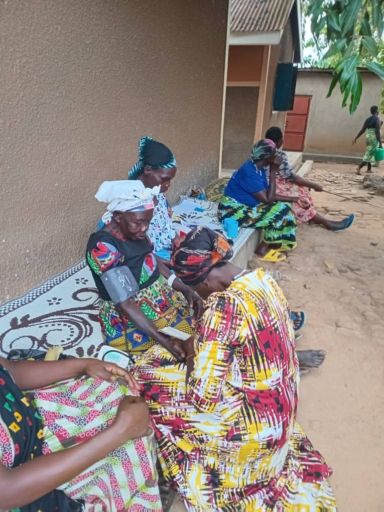
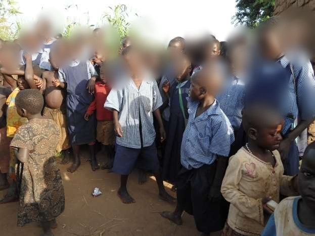
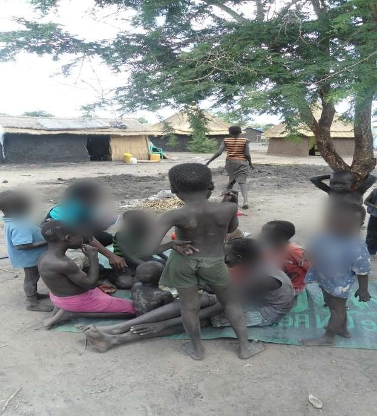
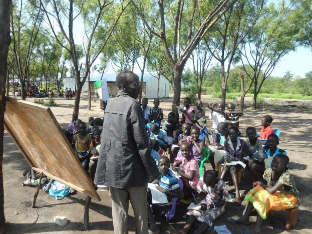
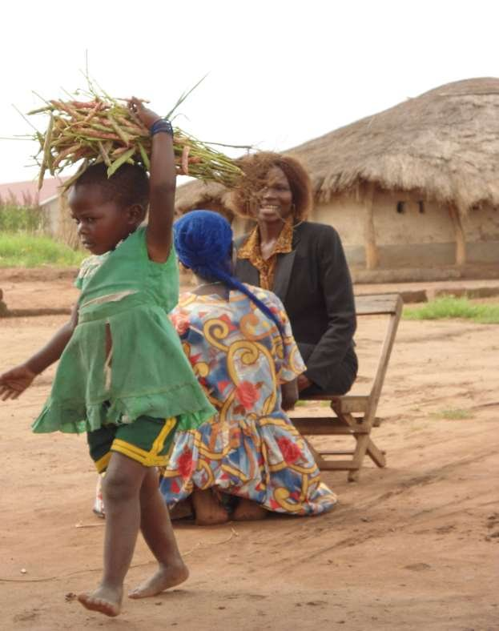
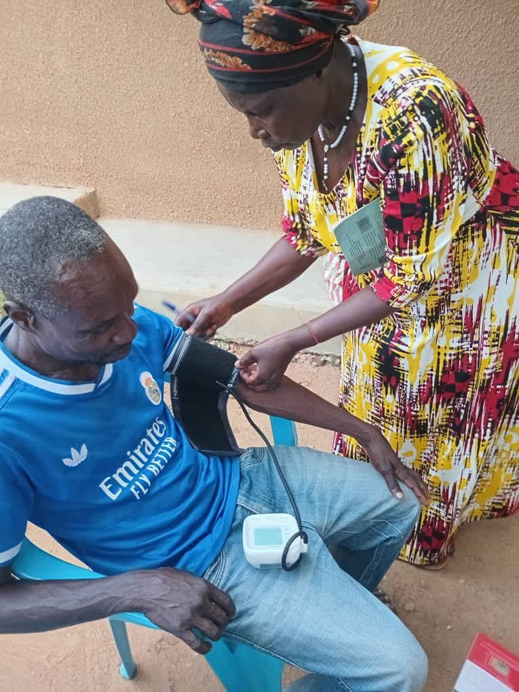

Drug Rehabilitation
Counseling, skills, and reintegration.

Founded by Nyolonga Colbert to restore dignity, hope, and resilience in West Nile.


A faith-based community organization founded by Nyolonga Colbert for practical care in West Nile.
WNHRI works close to households and schools so vulnerable children can be seen, supported, and guided with dignity.
Explore programs



Practical care for vulnerable communities.
Hope for Children, Dignity for Elders.
Care where it is needed most.
Counseling, skills, and reintegration.
School support and protection.
Home care with dignity.
Trees, water, and local action.
Skills, savings, and inclusion.
Stronger systems for local groups.
Local leadership. Practical service. Dignity first.
Every vulnerable life deserves dignity and hope.
Field moments from WNHRI outreach.

Support children, elders, family care, rehabilitation, and community outreach through a direct WNHRI giving channel.
View donation detailsReach the team directly.
Odianyadri Trading Centre, Eruba Parish, Vurra Sub County, Arua District, West Nile Region, Uganda.